2023 National 5 Physics marking instructions
Source: Scottish Qualifications Authority (SQA) / Qualifications Scotland. This is a StemInteract HTML companion, not an official HTML edition. Selectable text is supplied alongside original page images. Use the images or original PDF for equations, powers, fractions, vector notation, tables and diagrams; text extraction cannot fully preserve mathematical layout.
Jump to a question
PDF page 1
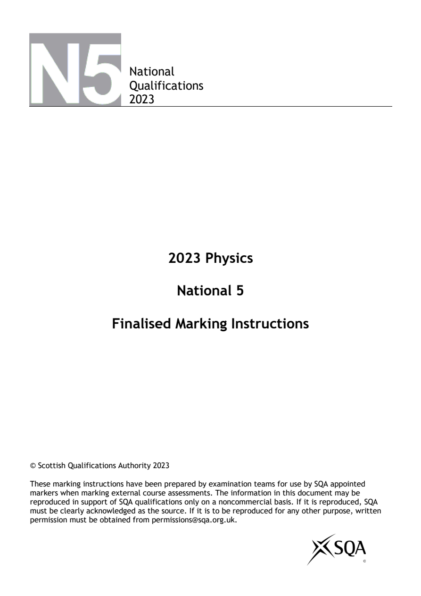
Selectable page text
National
Qualifications
2023
2023 Physics
National 5
Finalised Marking Instructions
© Scottish Qualifications Authority 2023
These marking instructions have been prepared by examination teams for use by SQA appointed
markers when marking external course assessments. The information in this document may be
reproduced in support of SQA qualifications only on a noncommercial basis. If it is reproduced, SQA
must be clearly acknowledged as the source. If it is to be reproduced for any other purpose, written
permission must be obtained from permissions@sqa.org.uk.PDF page 2
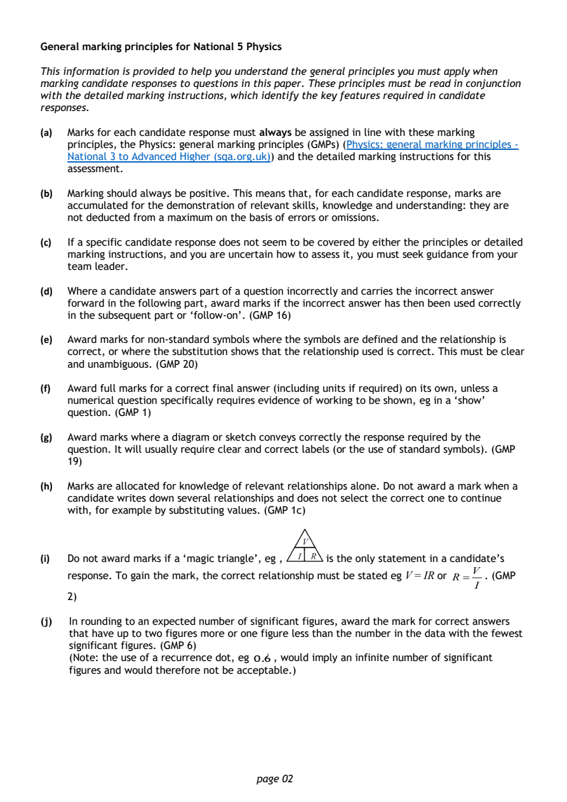
Selectable page text
General marking principles for National 5 Physics
This information is provided to help you understand the general principles you must apply when
marking candidate responses to questions in this paper. These principles must be read in conjunction
with the detailed marking instructions, which identify the key features required in candidate
responses.
(a) Marks for each candidate response must always be assigned in line with these marking
principles, the Physics: general marking principles (GMPs) (Physics: general marking principles -
National 3 to Advanced Higher (sqa.org.uk)) and the detailed marking instructions for this
assessment.
(b) Marking should always be positive. This means that, for each candidate response, marks are
accumulated for the demonstration of relevant skills, knowledge and understanding: they are
not deducted from a maximum on the basis of errors or omissions.
(c) If a specific candidate response does not seem to be covered by either the principles or detailed
marking instructions, and you are uncertain how to assess it, you must seek guidance from your
team leader.
(d) Where a candidate answers part of a question incorrectly and carries the incorrect answer
forward in the following part, award marks if the incorrect answer has then been used correctly
in the subsequent part or ‘follow-on’. (GMP 16)
(e) Award marks for non-standard symbols where the symbols are defined and the relationship is
correct, or where the substitution shows that the relationship used is correct. This must be clear
and unambiguous. (GMP 20)
(f) Award full marks for a correct final answer (including units if required) on its own, unless a
numerical question specifically requires evidence of working to be shown, eg in a ‘show’
question. (GMP 1)
(g) Award marks where a diagram or sketch conveys correctly the response required by the
question. It will usually require clear and correct labels (or the use of standard symbols). (GMP
19)
(h) Marks are allocated for knowledge of relevant relationships alone. Do not award a mark when a
candidate writes down several relationships and does not select the correct one to continue
with, for example by substituting values. (GMP 1c)
(i) Do not award marks if a ‘magic triangle’, eg , is the only statement in a candidate’s
V
response. To gain the mark, the correct relationship must be stated eg V = IR or R = . (GMP
I
2)
(j) In rounding to an expected number of significant figures, award the mark for correct answers
that have up to two figures more or one figure less than the number in the data with the fewest
significant figures. (GMP 6)
(Note: the use of a recurrence dot, eg 0.6^{} , would imply an infinite number of significant
figures and would therefore not be acceptable.)
page 02PDF page 3
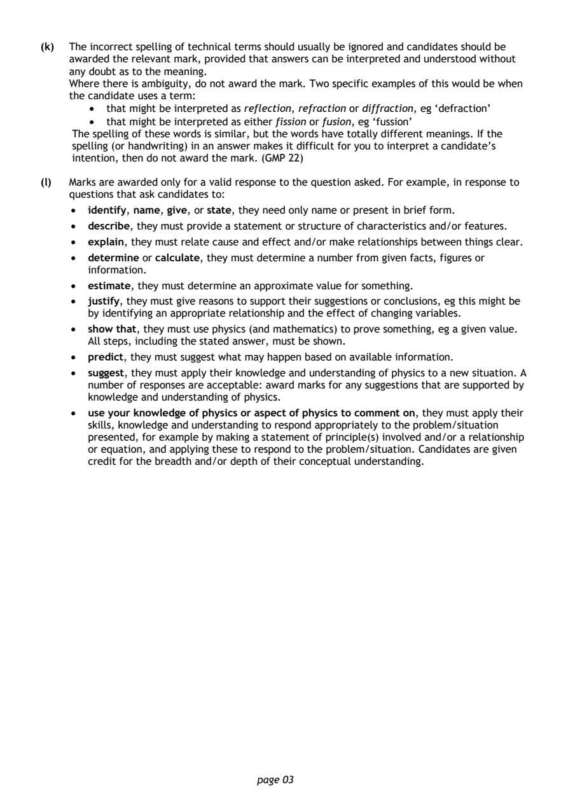
Selectable page text
(k) The incorrect spelling of technical terms should usually be ignored and candidates should be
awarded the relevant mark, provided that answers can be interpreted and understood without
any doubt as to the meaning.
Where there is ambiguity, do not award the mark. Two specific examples of this would be when
the candidate uses a term:
• that might be interpreted as reflection, refraction or diffraction, eg ‘defraction’
• that might be interpreted as either fission or fusion, eg ‘fussion’
The spelling of these words is similar, but the words have totally different meanings. If the
spelling (or handwriting) in an answer makes it difficult for you to interpret a candidate’s
intention, then do not award the mark. (GMP 22)
(l) Marks are awarded only for a valid response to the question asked. For example, in response to
questions that ask candidates to:
• identify, name, give, or state, they need only name or present in brief form.
• describe, they must provide a statement or structure of characteristics and/or features.
• explain, they must relate cause and effect and/or make relationships between things clear.
• determine or calculate, they must determine a number from given facts, figures or
information.
• estimate, they must determine an approximate value for something.
• justify, they must give reasons to support their suggestions or conclusions, eg this might be
by identifying an appropriate relationship and the effect of changing variables.
• show that, they must use physics (and mathematics) to prove something, eg a given value.
All steps, including the stated answer, must be shown.
• predict, they must suggest what may happen based on available information.
• suggest, they must apply their knowledge and understanding of physics to a new situation. A
number of responses are acceptable: award marks for any suggestions that are supported by
knowledge and understanding of physics.
• use your knowledge of physics or aspect of physics to comment on, they must apply their
skills, knowledge and understanding to respond appropriately to the problem/situation
presented, for example by making a statement of principle(s) involved and/or a relationship
or equation, and applying these to respond to the problem/situation. Candidates are given
credit for the breadth and/or depth of their conceptual understanding.
page 03PDF page 4
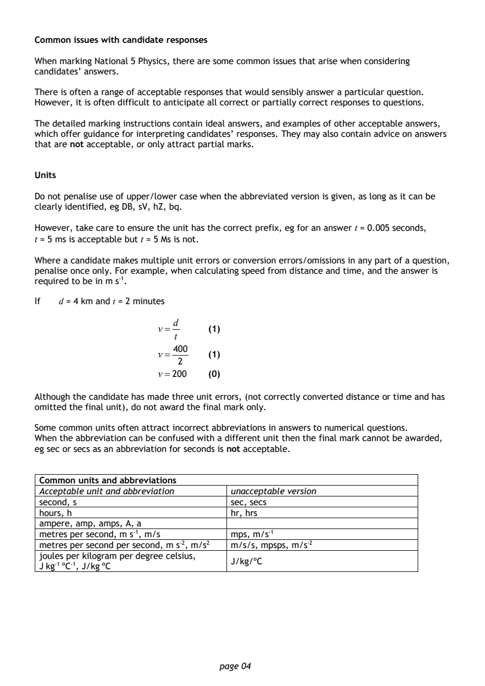
Selectable page text
Common issues with candidate responses
When marking National 5 Physics, there are some common issues that arise when considering
candidates’ answers.
There is often a range of acceptable responses that would sensibly answer a particular question.
However, it is often difficult to anticipate all correct or partially correct responses to questions.
The detailed marking instructions contain ideal answers, and examples of other acceptable answers,
which offer guidance for interpreting candidates’ responses. They may also contain advice on answers
that are not acceptable, or only attract partial marks.
Units
Do not penalise use of upper/lower case when the abbreviated version is given, as long as it can be
clearly identified, eg DB, sV, hZ, bq.
However, take care to ensure the unit has the correct prefix, eg for an answer t = 0.005 seconds,
t = 5 ms is acceptable but t = 5 Ms is not.
Where a candidate makes multiple unit errors or conversion errors/omissions in any part of a question,
penalise once only. For example, when calculating speed from distance and time, and the answer is
required to be in ms⁻¹.
If d = 4 km and t = 2 minutes
d
v= (1)
t
400
v= (1)
2
v=200 (0)
Although the candidate has made three unit errors, (not correctly converted distance or time and has
omitted the final unit), do not award the final mark only.
Some common units often attract incorrect abbreviations in answers to numerical questions.
When the abbreviation can be confused with a different unit then the final mark cannot be awarded,
eg sec or secs as an abbreviation for seconds is not acceptable.
Common units and abbreviations
Acceptable unit and abbreviation unacceptable version
second, s sec, secs
hours, h hr, hrs
ampere, amp, amps, A, a
metres per second, m s⁻¹, m/s mps, m/s⁻¹
metres per second per second, m s⁻², m/s² m/s/s, mpsps, m/s⁻²
joules per kilogram per degree celsius,
J/kg/ºC
J kg⁻¹ ºC⁻¹, J/kg ºC
page 04PDF page 5
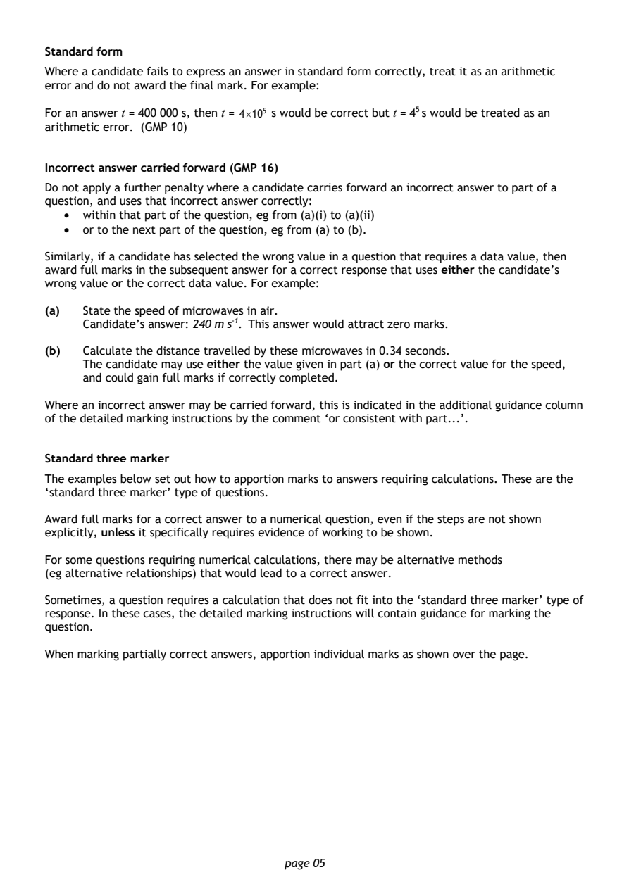
Selectable page text
Standard form
Where a candidate fails to express an answer in standard form correctly, treat it as an arithmetic
error and do not award the final mark. For example:
For an answer t = 400 000 s, then t = 4×10⁵ s would be correct but t = 4⁵ s would be treated as an
arithmetic error. (GMP 10)
Incorrect answer carried forward (GMP 16)
Do not apply a further penalty where a candidate carries forward an incorrect answer to part of a
question, and uses that incorrect answer correctly:
• within that part of the question, eg from (a)(i) to (a)(ii)
• or to the next part of the question, eg from (a) to (b).
Similarly, if a candidate has selected the wrong value in a question that requires a data value, then
award full marks in the subsequent answer for a correct response that uses either the candidate’s
wrong value or the correct data value. For example:
(a) State the speed of microwaves in air.
Candidate’s answer: 240 m s⁻¹. This answer would attract zero marks.
(b) Calculate the distance travelled by these microwaves in 0.34 seconds.
The candidate may use either the value given in part (a) or the correct value for the speed,
and could gain full marks if correctly completed.
Where an incorrect answer may be carried forward, this is indicated in the additional guidance column
of the detailed marking instructions by the comment ‘or consistent with part...’.
Standard three marker
The examples below set out how to apportion marks to answers requiring calculations. These are the
‘standard three marker’ type of questions.
Award full marks for a correct answer to a numerical question, even if the steps are not shown
explicitly, unless it specifically requires evidence of working to be shown.
For some questions requiring numerical calculations, there may be alternative methods
(eg alternative relationships) that would lead to a correct answer.
Sometimes, a question requires a calculation that does not fit into the ‘standard three marker’ type of
response. In these cases, the detailed marking instructions will contain guidance for marking the
question.
When marking partially correct answers, apportion individual marks as shown over the page.
page 05PDF page 6
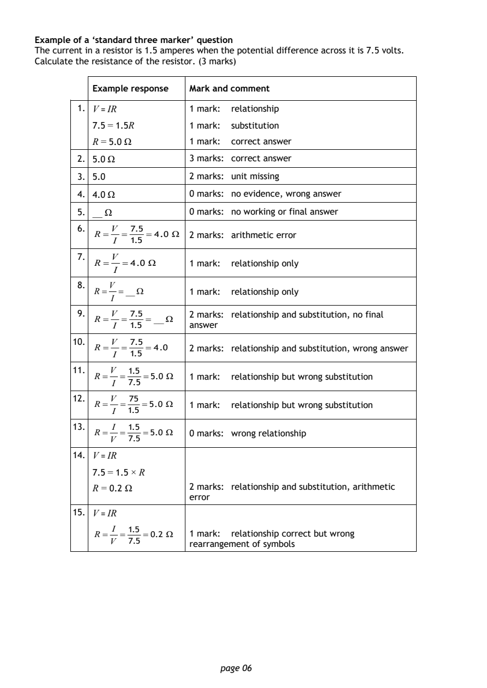
Selectable page text
Example of a ‘standard three marker’ question
The current in a resistor is 1.5 amperes when the potential difference across it is 7.5 volts.
Calculate the resistance of the resistor. (3 marks)
Example response Mark and comment
1. V = IR 1 mark: relationship
7.5 = 1.5R 1 mark: substitution
R = 5.0 Ω 1 mark: correct answer
2. 5.0 Ω 3 marks: correct answer
3. 5.0 2 marks: unit missing
4. 4.0 Ω 0 marks: no evidence, wrong answer
5. __ Ω 0 marks: no working or final answer
6. V 7.5
R = = =4.0 Ω 2 marks: arithmetic error
I 1.5
7. V
R = =4.0 Ω 1 mark: relationship only
I
8. V
R= =__Ω 1 mark: relationship only
I
9. V 7.5 2 marks: relationship and substitution, no final
R = = = __Ω
I 1.5 answer
10. V 7.5
R = = =4.0 2 marks: relationship and substitution, wrong answer
I 1.5
11. V 1.5
R= = =5.0 Ω 1 mark: relationship but wrong substitution
I 7.5
12. V 75
R= = =5.0 Ω 1 mark: relationship but wrong substitution
I 1.5
13. I 1.5
R= = =5.0 Ω 0 marks: wrong relationship
V 7.5
14. V = IR
7.5 = 1.5 × R
R = 0.2 Ω 2 marks: relationship and substitution, arithmetic
error
15. V = IR
I 1.5
R= = =0.2 Ω 1 mark: relationship correct but wrong
V 7.5 rearrangement of symbols
page 06PDF page 7
Section 1, Question 1Section 1, Question 2Section 1, Question 3Section 1, Question 4Section 1, Question 5Section 1, Question 6Section 1, Question 7Section 1, Question 8Section 1, Question 9Section 1, Question 10Section 1, Question 11Section 1, Question 12Section 1, Question 13Section 1, Question 14Section 1, Question 15Section 1, Question 16Section 1, Question 17Section 1, Question 18Section 1, Question 19Section 1, Question 20Section 1, Question 21Section 1, Question 22Section 1, Question 23Section 1, Question 24Section 1, Question 25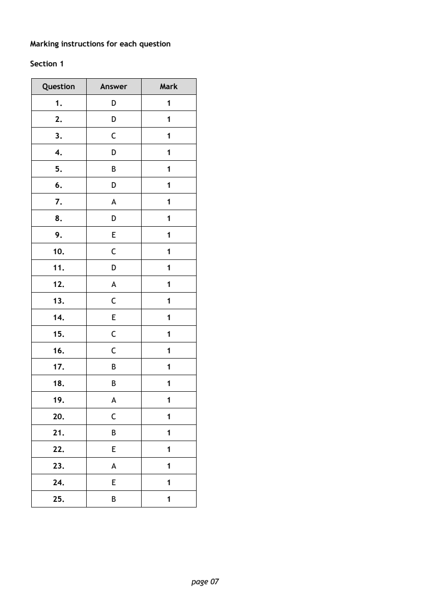
Selectable page text
Marking instructions for each question
Section 1
Question Answer Mark
1. D 1
2. D 1
3. C 1
4. D 1
5. B 1
6. D 1
7. A 1
8. D 1
9. E 1
10. C 1
11. D 1
12. A 1
13. C 1
14. E 1
15. C 1
16. C 1
17. B 1
18. B 1
19. A 1
20. C 1
21. B 1
22. E 1
23. A 1
24. E 1
25. B 1
page 07PDF page 8
Section 2, Question 1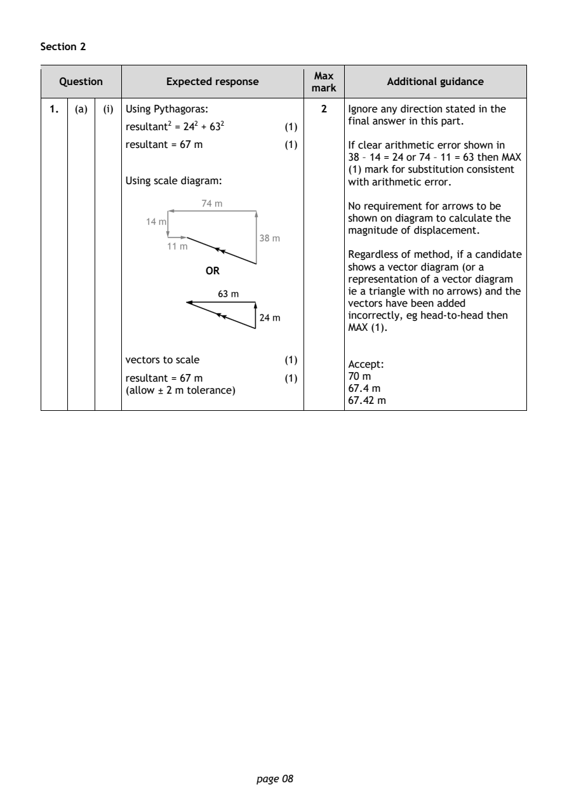
Selectable page text
Section 2
Max
Question Expected response Additional guidance
mark
1. (a) (i) Using Pythagoras: 2 Ignore any direction stated in the
final answer in this part.
resultant² = 24² + 63² (1)
resultant = 67 m (1) If clear arithmetic error shown in
38 – 14 = 24 or 74 – 11 = 63 then MAX
(1) mark for substitution consistent
Using scale diagram: with arithmetic error.
No requirement for arrows to be
shown on diagram to calculate the
magnitude of displacement.
Regardless of method, if a candidate
shows a vector diagram (or a
OR
representation of a vector diagram
ie a triangle with no arrows) and the
vectors have been added
incorrectly, eg head-to-head then
MAX (1).
vectors to scale (1)
Accept:
resultant = 67 m (1) 70 m
(allow ± 2 m tolerance) 67.4 m
67.42 m
page 08PDF page 9
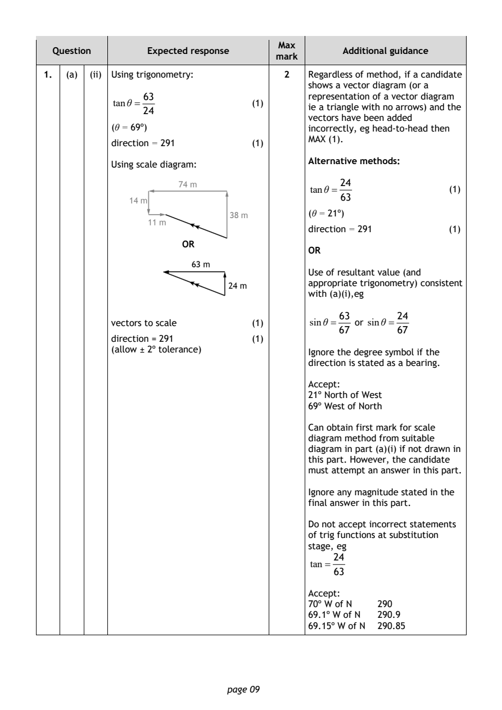
Selectable page text
Max
Question Expected response Additional guidance
mark
1. (a) (ii) Using trigonometry: 2 Regardless of method, if a candidate
shows a vector diagram (or a
63 representation of a vector diagram
tanθ = (1)
ie a triangle with no arrows) and the
24
vectors have been added
(θ = 69º) incorrectly, eg head-to-head then
MAX (1).
direction = 291 (1)
Alternative methods:
Using scale diagram:
24
tanθ = (1)
63
(θ = 21º)
direction = 291 (1)
OR
OR
Use of resultant value (and
appropriate trigonometry) consistent
with (a)(i),eg
63 24
vectors to scale (1) sinθ = or sinθ =
67 67
direction = 291 (1)
(allow ± 2º tolerance) Ignore the degree symbol if the
direction is stated as a bearing.
Accept:
21º North of West
69º West of North
Can obtain first mark for scale
diagram method from suitable
diagram in part (a)(i) if not drawn in
this part. However, the candidate
must attempt an answer in this part.
Ignore any magnitude stated in the
final answer in this part.
Do not accept incorrect statements
of trig functions at substitution
stage, eg
24
tan =
63
Accept:
70º W of N 290
69.1º W of N 290.9
69.15º W of N 290.85
page 09PDF page 10
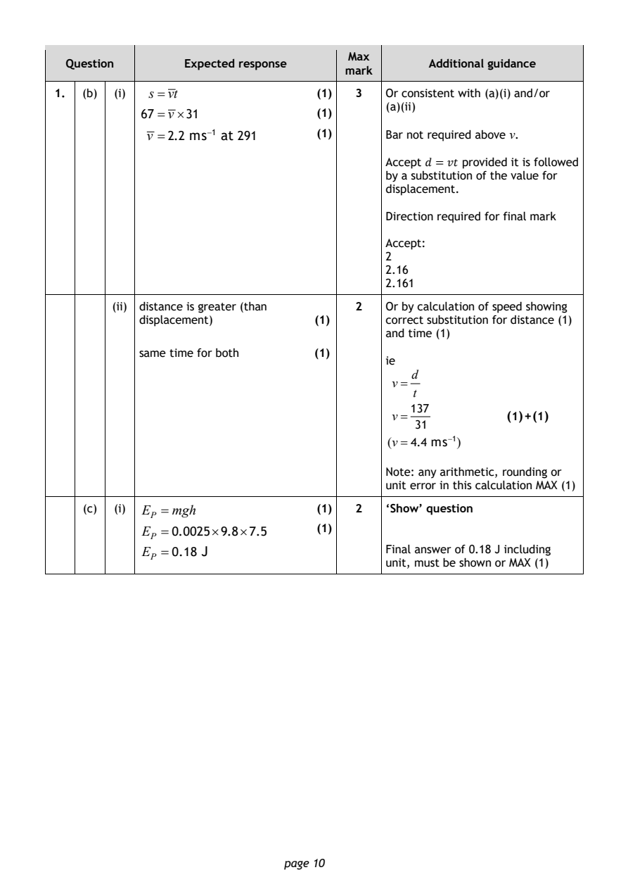
Selectable page text
Max
Question Expected response Additional guidance
mark
1. (b) (i) s =vt (1) 3 Or consistent with (a)(i) and/or
(a)(ii)
67 =v×31 (1)
v =2.2 ms⁻¹ at 291 (1) Bar not required above v.
Accept provided it is followed
by a substitution of the value for
displace𝑑𝑑m=en𝑣𝑣t𝑣𝑣.
Direction required for final mark
Accept:
2
2.16
2.161
(ii) distance is greater (than 2 Or by calculation of speed showing
displacement) (1) correct substitution for distance (1)
and time (1)
same time for both (1)
ie
d
v=
t
137
v= (1)+(1)
31
(v=4.4 ms⁻¹)
Note: any arithmetic, rounding or
unit error in this calculation MAX (1)
(c) (i) E_{P} = mgh (1) 2 ‘Show’ question
E_{P} =0.0025×9.8×7.5 (1)
E_{P} =0.18 J Final answer of 0.18 J including
unit, must be shown or MAX (1)
page 10PDF page 11
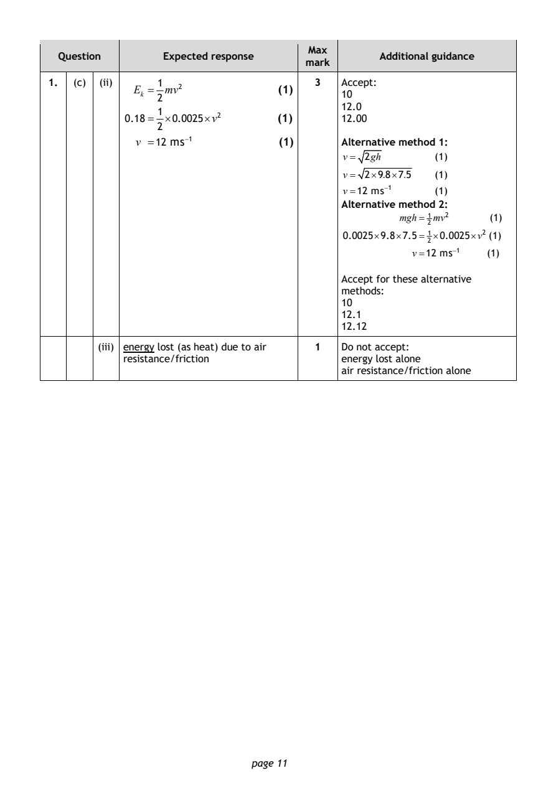
Selectable page text
Max
Question Expected response Additional guidance
mark
1. (c) (ii) 1 3 Accept:
Eₖ = mv² (1)
10
2
12.0
1
0.18= ×0.0025×v² (1) 12.00
2
v =12 ms⁻¹ (1) Alternative method 1:
v= 2gh (1)
v= 2×9.8×7.5 (1)
v=12 ms⁻¹ (1)
Alternative method 2:
mgh= ₂¹mv² (1)
0.0025×9.8×7.5= ₂¹×0.0025×v² (1)
v=12 ms⁻¹ (1)
Accept for these alternative
methods:
10
12.1
12.12
(iii) energy lost (as heat) due to air 1 Do not accept:
resistance/friction energy lost alone
air resistance/friction alone
page 11PDF page 12
Section 2, Question 2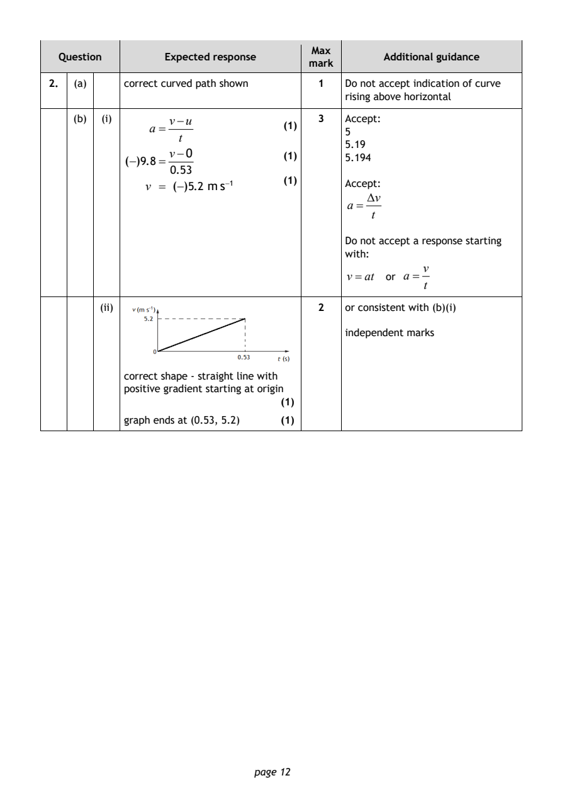
Selectable page text
Max
Question Expected response Additional guidance
mark
2. (a) correct curved path shown 1 Do not accept indication of curve
rising above horizontal
(b) (i) v−u 3 Accept:
a = (1)
5
t
5.19
(−)9.8 =
v−0
(1) 5.194
0.53
(1)
v = (−)5.2 ms⁻¹ Accept:
Δv
a =
t
Do not accept a response starting
with:
v
v =at or a =
t
(ii) 2 or consistent with (b)(i)
independent marks
correct shape - straight line with
positive gradient starting at origin
(1)
graph ends at (0.53, 5.2) (1)
page 12PDF page 13
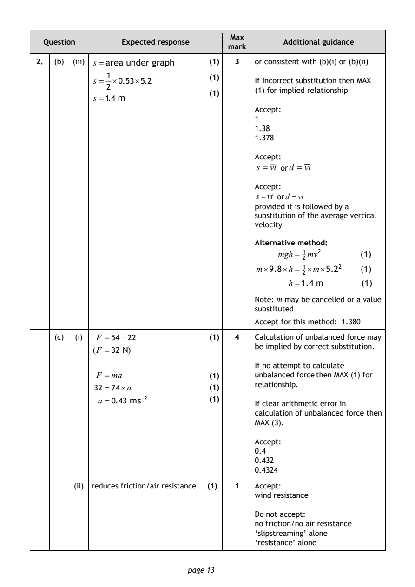
Selectable page text
Max
Question Expected response Additional guidance
mark
2. (b) (iii) s =area under graph (1) 3 or consistent with (b)(i) or (b)(ii)
1
(1)
s = ×0.53×5.2 If incorrect substitution then MAX
2
(1) for implied relationship
(1)
s =1.4 m
Accept:
1
1.38
1.378
Accept:
s =vt ord =vt
Accept:
s=vt ord =vt
provided it is followed by a
substitution of the average vertical
velocity
Alternative method:
mgh= ₂¹mv² (1)
m×9.8×h= ₂¹×m×5.2² (1)
h=1.4 m (1)
Note: m may be cancelled or a value
substituted
Accept for this method: 1.380
(c) (i) F =54−22 (1) 4 Calculation of unbalanced force may
be implied by correct substitution.
(F =32 N)
If no attempt to calculate
F =ma (1) unbalanced force then MAX (1) for
relationship.
32=74×a (1)
a =0.43 ms⁻² (1)
If clear arithmetic error in
calculation of unbalanced force then
MAX (3).
Accept:
0.4
0.432
0.4324
(ii) reduces friction/air resistance (1) 1 Accept:
wind resistance
Do not accept:
no friction/no air resistance
‘slipstreaming’ alone
‘resistance’ alone
page 13PDF page 14
Section 2, Question 3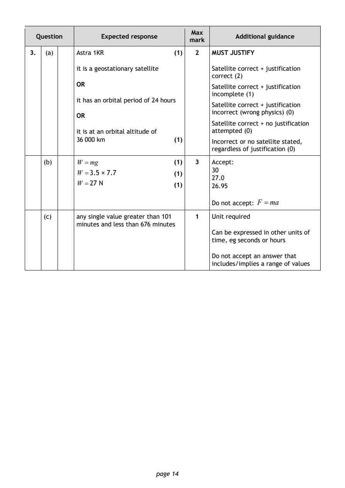
Selectable page text
Max
Question Expected response Additional guidance
mark
3. (a) Astra 1KR (1) 2 MUST JUSTIFY
it is a geostationary satellite Satellite correct + justification
correct (2)
OR
Satellite correct + justification
incomplete (1)
it has an orbital period of 24 hours
Satellite correct + justification
incorrect (wrong physics) (0)
OR
Satellite correct + no justification
it is at an orbital altitude of attempted (0)
36 000 km (1)
Incorrect or no satellite stated,
regardless of justification (0)
(b) W =mg (1) 3 Accept:
30
W =3.5 × 7.7 (1)
27.0
W =27 N
(1) 26.95
Do not accept: F =ma
(c) any single value greater than 101 1 Unit required
minutes and less than 676 minutes
Can be expressed in other units of
time, eg seconds or hours
Do not accept an answer that
includes/implies a range of values
page 14PDF page 15
Section 2, Question 4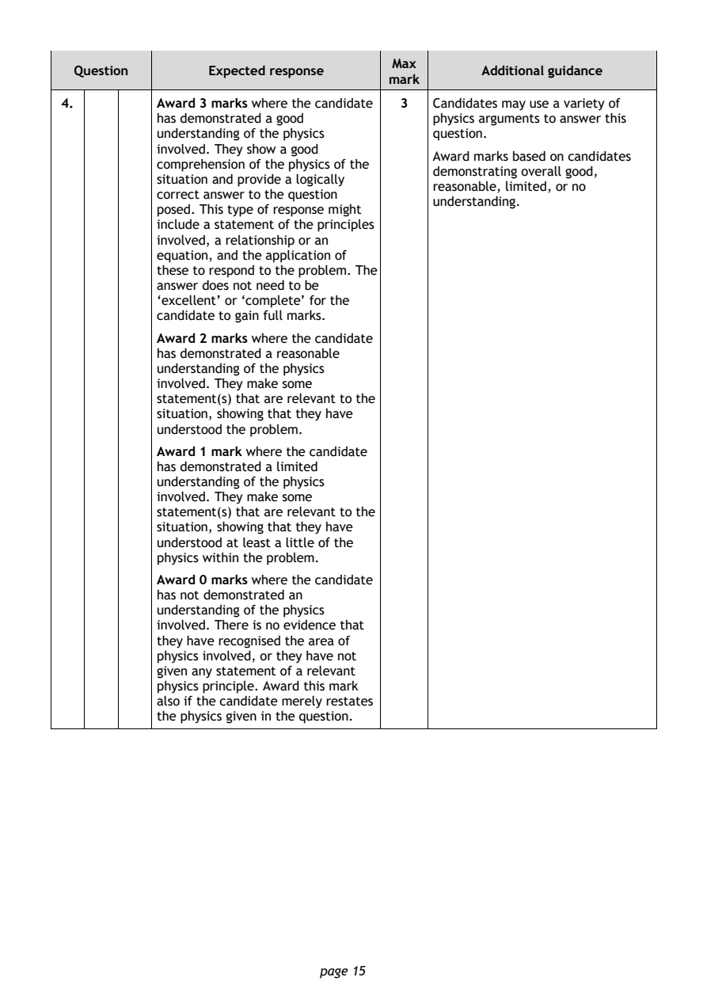
Selectable page text
Max
Question Expected response Additional guidance
mark
4. Award 3 marks where the candidate 3 Candidates may use a variety of
has demonstrated a good physics arguments to answer this
understanding of the physics question.
involved. They show a good
Award marks based on candidates
comprehension of the physics of the
demonstrating overall good,
situation and provide a logically
reasonable, limited, or no
correct answer to the question
understanding.
posed. This type of response might
include a statement of the principles
involved, a relationship or an
equation, and the application of
these to respond to the problem. The
answer does not need to be
‘excellent’ or ‘complete’ for the
candidate to gain full marks.
Award 2 marks where the candidate
has demonstrated a reasonable
understanding of the physics
involved. They make some
statement(s) that are relevant to the
situation, showing that they have
understood the problem.
Award 1 mark where the candidate
has demonstrated a limited
understanding of the physics
involved. They make some
statement(s) that are relevant to the
situation, showing that they have
understood at least a little of the
physics within the problem.
Award 0 marks where the candidate
has not demonstrated an
understanding of the physics
involved. There is no evidence that
they have recognised the area of
physics involved, or they have not
given any statement of a relevant
physics principle. Award this mark
also if the candidate merely restates
the physics given in the question.
page 15PDF page 16
Section 2, Question 5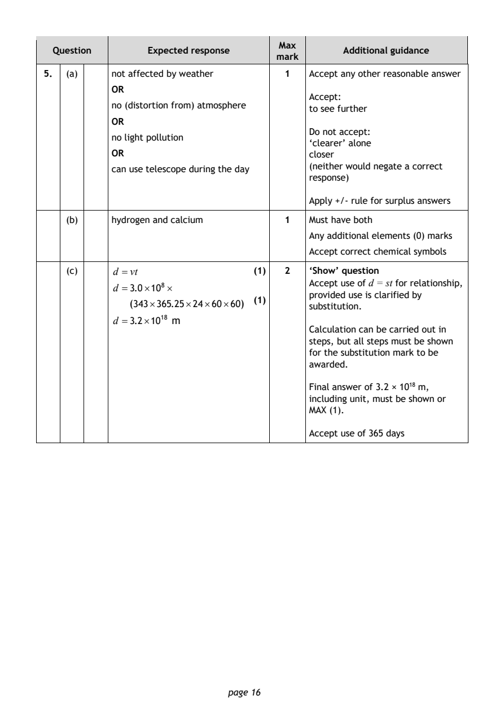
Selectable page text
Max
Question Expected response Additional guidance
mark
5. (a) not affected by weather 1 Accept any other reasonable answer
OR
Accept:
no (distortion from) atmosphere
to see further
OR
Do not accept:
no light pollution
‘clearer’ alone
OR closer
(neither would negate a correct
can use telescope during the day
response)
Apply +/- rule for surplus answers
(b) hydrogen and calcium 1 Must have both
Any additional elements (0) marks
Accept correct chemical symbols
(c) d =vt (1) 2 ‘Show’ question
Accept use of d = st for relationship,
d =3.0×10⁸×
provided use is clarified by
(1)
(343×365.25×24×60×60)
substitution.
d =3.2×10¹⁸ m
Calculation can be carried out in
steps, but all steps must be shown
for the substitution mark to be
awarded.
Final answer of 3.2 × 10¹⁸ m,
including unit, must be shown or
MAX (1).
Accept use of 365 days
page 16PDF page 17
Section 2, Question 6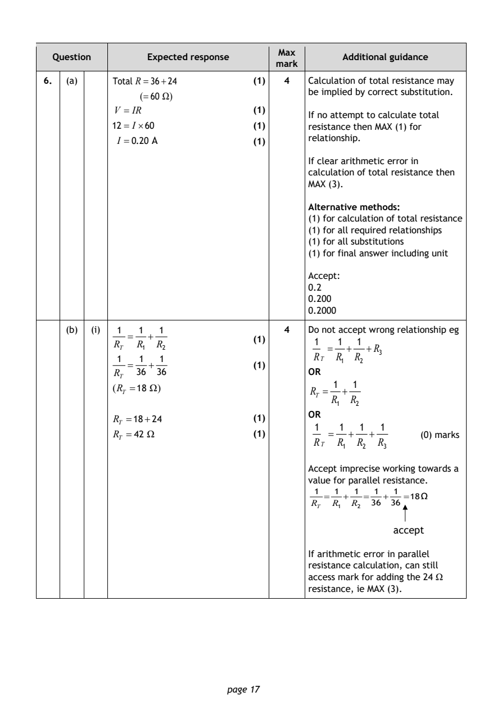
Selectable page text
Max
Question Expected response Additional guidance
mark
6. (a) Total R=36+24 (1) 4 Calculation of total resistance may
be implied by correct substitution.
(=60 Ω)
V = IR (1)
If no attempt to calculate total
12= I ×60 (1) resistance then MAX (1) for
I =0.20 A (1) relationship.
If clear arithmetic error in
calculation of total resistance then
MAX (3).
Alternative methods:
(1) for calculation of total resistance
(1) for all required relationships
(1) for all substitutions
(1) for final answer including unit
Accept:
0.2
0.200
0.2000
(b) (i) 1 1 1 4 Do not accept wrong relationship eg
= +
R_{T} R₁ R₂ (1) 1 1 1
= + +R₃
1 1 1 R T R₁ R₂
= + (1)
R_{T} 36 36 OR
1 1
(R_{T} =18 Ω) R_{T} = +
R₁ R₂
OR
R_{T} =18+24 (1)
1 1 1 1
R_{T} =42 Ω (1) = + + (0) marks
R R₁ R₂ R₃
T
Accept imprecise working towards a
value for parallel resistance.
1
=
1
+
1
=
1
+
1
=18Ω
R_{T} R₁ R₂ 36 36
accept
If arithmetic error in parallel
resistance calculation, can still
access mark for adding the 24 Ω
resistance, ie MAX (3).
page 17PDF page 18
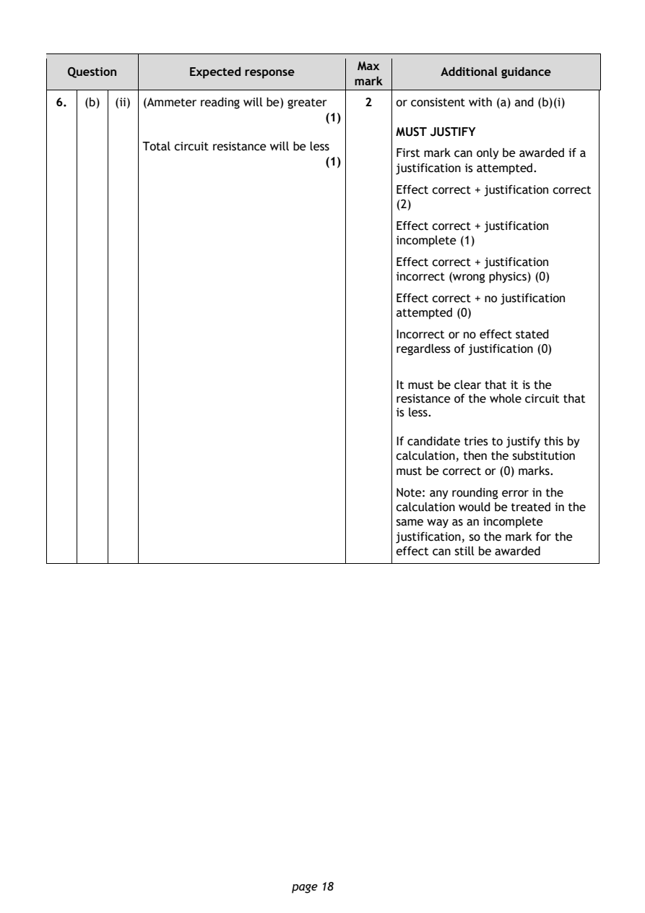
Selectable page text
Max
Question Expected response Additional guidance
mark
6. (b) (ii) (Ammeter reading will be) greater 2 or consistent with (a) and (b)(i)
(1)
MUST JUSTIFY
Total circuit resistance will be less
First mark can only be awarded if a
(1)
justification is attempted.
Effect correct + justification correct
(2)
Effect correct + justification
incomplete (1)
Effect correct + justification
incorrect (wrong physics) (0)
Effect correct + no justification
attempted (0)
Incorrect or no effect stated
regardless of justification (0)
It must be clear that it is the
resistance of the whole circuit that
is less.
If candidate tries to justify this by
calculation, then the substitution
must be correct or (0) marks.
Note: any rounding error in the
calculation would be treated in the
same way as an incomplete
justification, so the mark for the
effect can still be awarded
page 18PDF page 19
Section 2, Question 7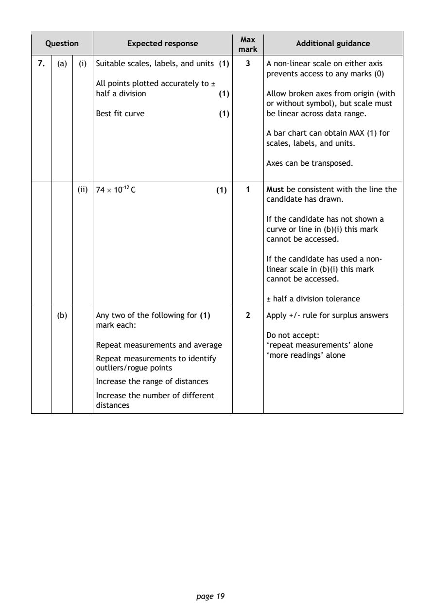
Selectable page text
Max
Question Expected response Additional guidance
mark
7. (a) (i) Suitable scales, labels, and units (1) 3 A non-linear scale on either axis
prevents access to any marks (0)
All points plotted accurately to ±
half a division (1) Allow broken axes from origin (with
or without symbol), but scale must
Best fit curve (1) be linear across data range.
A bar chart can obtain MAX (1) for
scales, labels, and units.
Axes can be transposed.
(ii) 74 × 10⁻¹² C (1) 1 Must be consistent with the line the
candidate has drawn.
If the candidate has not shown a
curve or line in (b)(i) this mark
cannot be accessed.
If the candidate has used a non-
linear scale in (b)(i) this mark
cannot be accessed.
± half a division tolerance
(b) Any two of the following for (1) 2 Apply +/- rule for surplus answers
mark each:
Do not accept:
Repeat measurements and average ‘repeat measurements’ alone
‘more readings’ alone
Repeat measurements to identify
outliers/rogue points
Increase the range of distances
Increase the number of different
distances
page 19PDF page 20
Section 2, Question 8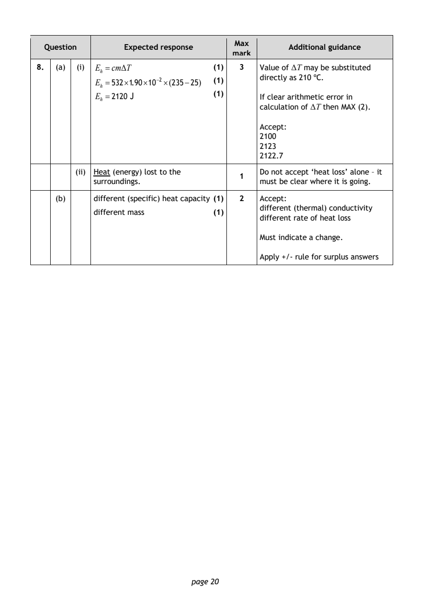
Selectable page text
Max
Question Expected response Additional guidance
mark
8. (a) (i) Eₕ =cmΔT (1) 3 Value of ΔT may be substituted
directly as 210 ºC.
Eₕ =532×1.90×10⁻²×(235−25) (1)
Eₕ =2120 J (1) If clear arithmetic error in
calculation of ΔT then MAX (2).
Accept:
2100
2123
2122.7
(ii) Heat (energy) lost to the Do not accept ‘heat loss’ alone – it
1
surroundings. must be clear where it is going.
(b) different (specific) heat capacity (1) 2 Accept:
different (thermal) conductivity
different mass (1)
different rate of heat loss
Must indicate a change.
Apply +/- rule for surplus answers
page 20PDF page 21
Section 2, Question 9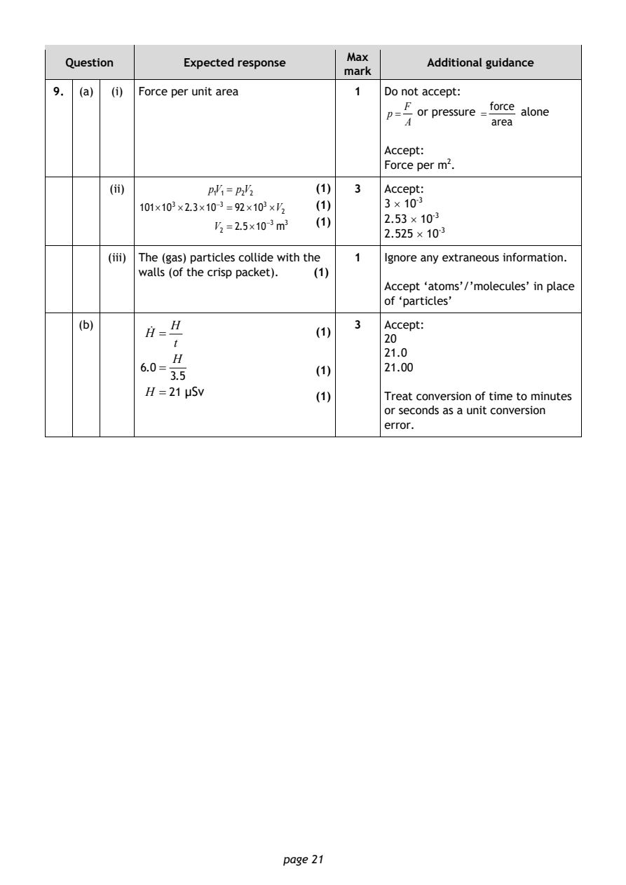
Selectable page text
Max
Question Expected response Additional guidance
mark
9. (a) (i) Force per unit area 1 Do not accept:
F force
p= or pressure = alone
A area
Accept:
Force per m².
(ii) p₁V₁= p₂V₂ (1) 3 Accept:
101×10³×2.3×10⁻³ =92×10³×V₂ (1) 3 × 10⁻³
(1) 2.53 × 10⁻³
V₂ =2.5×10⁻³m³
2.525 × 10⁻³
(iii) The (gas) particles collide with the 1 Ignore any extraneous information.
walls (of the crisp packet). (1)
Accept ‘atoms’/’molecules’ in place
of ‘particles’
(b) H 3 Accept:
H = (1)
20
t
21.0
H
6.0 = (1) 21.00
3.5
H =21 μSv
(1) Treat conversion of time to minutes
or seconds as a unit conversion
error.
page 21PDF page 22
Section 2, Question 10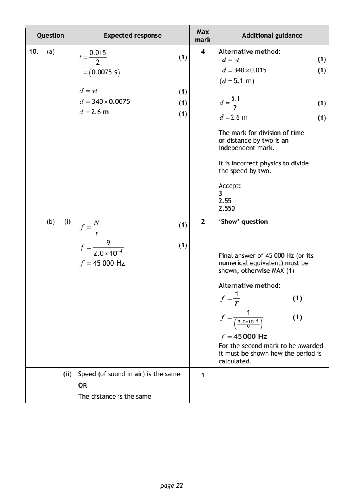
Selectable page text
Max
Question Expected response Additional guidance
mark
10. (a) 0.015 4 Alternative method:
t = (1) d =vt (1)
2
=( 0.0075 s) d =340×0.015 (1)
(d =5.1 m)
d =vt (1)
5.1
d =340×0.0075 (1) d = (1)
2
d =2.6 m (1)
d =2.6 m (1)
The mark for division of time
or distance by two is an
independent mark.
It is incorrect physics to divide
the speed by two.
Accept:
3
2.55
2.550
(b) (i) N 2 ‘Show’ question
f = (1)
t
9
f = (1)
2.0×10⁻⁴
Final answer of 45 000 Hz (or its
f = 45 000 Hz numerical equivalent) must be
shown, otherwise MAX (1)
Alternative method:
1
f = (1)
T
1
f = (1)
( )
2.0×10⁻⁴
9
f = 45000 Hz
For the second mark to be awarded
it must be shown how the period is
calculated.
(ii) Speed (of sound in air) is the same 1
OR
The distance is the same
page 22PDF page 23
Section 2, Question 11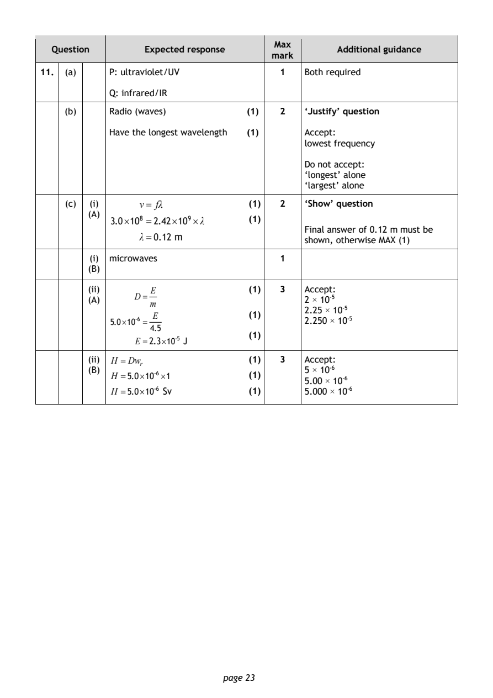
Selectable page text
Max
Question Expected response Additional guidance
mark
11. (a) P: ultraviolet/UV 1 Both required
Q: infrared/IR
(b) Radio (waves) (1) 2 ‘Justify’ question
Have the longest wavelength (1) Accept:
lowest frequency
Do not accept:
‘longest’ alone
‘largest’ alone
(c) (i) v= fλ (1) 2 ‘Show’ question
(A)
3.0×10⁸ =2.42×10⁹×λ (1)
Final answer of 0.12 m must be
λ=0.12 m
shown, otherwise MAX (1)
(i) microwaves 1
(B)
(ii) E (1) 3 Accept:
(A)
D=
2 × 10⁻⁵
m
2.25 × 10⁻⁵
E (1)
5.0×10⁻⁶ = 2.250 × 10⁻⁵
4.5
(1)
E=2.3×10⁻⁵ J
(ii) H =Dwᵣ (1) 3 Accept:
(B) 5 × 10⁻⁶
H =5.0×10⁻⁶×1 (1)
5.00 × 10⁻⁶
H =5.0×10⁻⁶ Sv (1) 5.000 × 10⁻⁶
page 23PDF page 24
Section 2, Question 12Selectable page text
Max
Question Expected response Additional guidance
mark
12. Award 3 marks where the candidate 3 Candidates may use a variety of
has demonstrated a good physics arguments to answer this
understanding of the physics question.
involved. They show a good
Award marks based on candidates
comprehension of the physics of the
demonstrating overall good,
situation and provide a logically
reasonable, limited, or no
correct answer to the question
understanding.
posed. This type of response might
include a statement of the principles
involved, a relationship or an
equation, and the application of
these to respond to the problem.
The answer does not need to be
‘excellent’ or ‘complete’ for the
candidate to gain full marks.
Award 2 marks where the candidate
has demonstrated a reasonable
understanding of the physics
involved. They make some
statement(s) that are relevant to the
situation, showing that they have
understood the problem.
Award 1 mark where the candidate
has demonstrated a limited
understanding of the physics
involved. They make some
statement(s) that are relevant to the
situation, showing that they have
understood at least a little of the
physics within the problem.
Award 0 marks where the candidate
has not demonstrated an
understanding of the physics
involved. There is no evidence that
they have recognised the area of
physics involved, or they have not
given any statement of a relevant
physics principle. Award this mark
also if the candidate merely restates
the physics given in the question.
page 24PDF page 25
Section 2, Question 13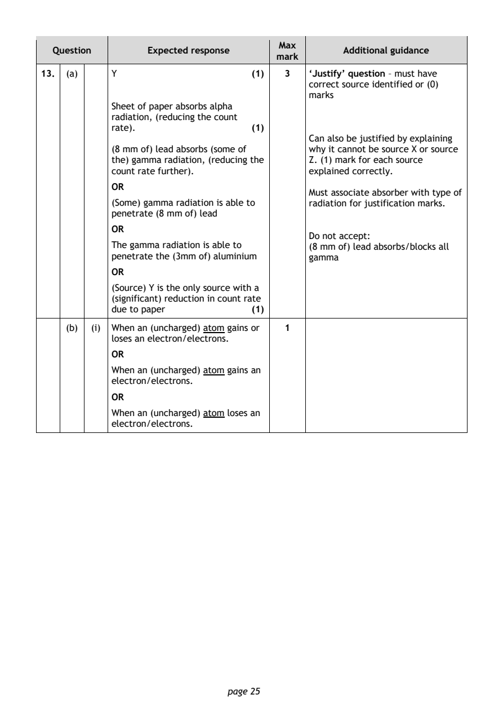
Selectable page text
Max
Question Expected response Additional guidance
mark
13. (a) Y (1) 3 ‘Justify’ question – must have
correct source identified or (0)
marks
Sheet of paper absorbs alpha
radiation, (reducing the count
rate). (1)
Can also be justified by explaining
(8 mm of) lead absorbs (some of why it cannot be source X or source
the) gamma radiation, (reducing the Z. (1) mark for each source
count rate further). explained correctly.
OR
Must associate absorber with type of
(Some) gamma radiation is able to radiation for justification marks.
penetrate (8 mm of) lead
OR
Do not accept:
The gamma radiation is able to (8 mm of) lead absorbs/blocks all
penetrate the (3mm of) aluminium gamma
OR
(Source) Y is the only source with a
(significant) reduction in count rate
due to paper (1)
(b) (i) When an (uncharged) atom gains or 1
loses an electron/electrons.
OR
When an (uncharged) atom gains an
electron/electrons.
OR
When an (uncharged) atom loses an
electron/electrons.
page 25PDF page 26
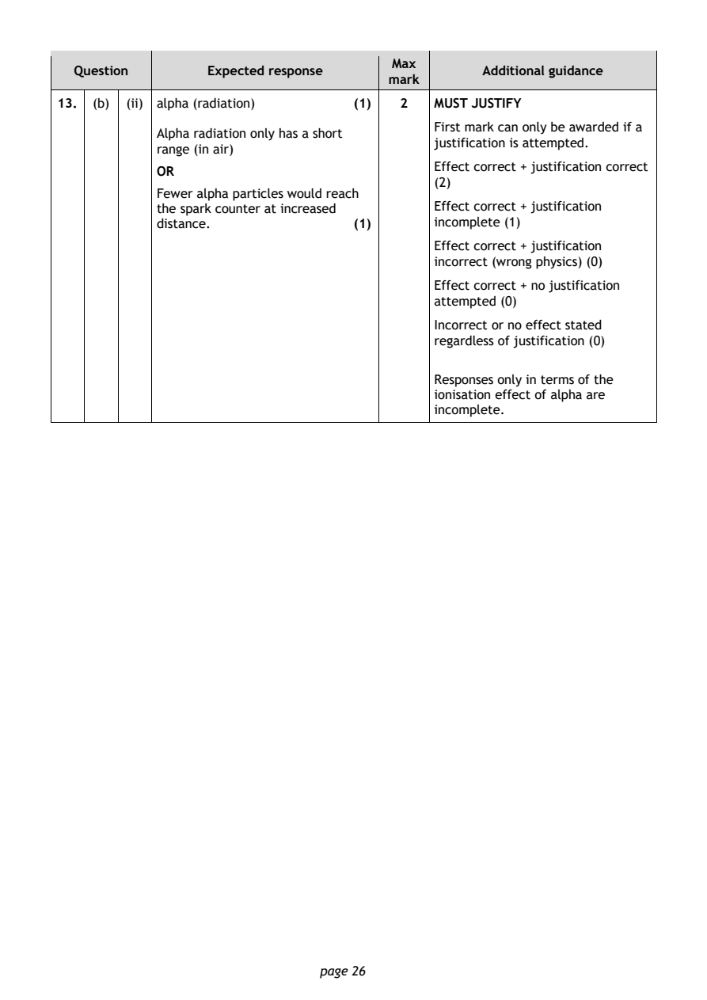
Selectable page text
Max
Question Expected response Additional guidance
mark
13. (b) (ii) alpha (radiation) (1) 2 MUST JUSTIFY
First mark can only be awarded if a
Alpha radiation only has a short
justification is attempted.
range (in air)
Effect correct + justification correct
OR
(2)
Fewer alpha particles would reach
the spark counter at increased Effect correct + justification
distance. (1) incomplete (1)
Effect correct + justification
incorrect (wrong physics) (0)
Effect correct + no justification
attempted (0)
Incorrect or no effect stated
regardless of justification (0)
Responses only in terms of the
ionisation effect of alpha are
incomplete.
page 26PDF page 27
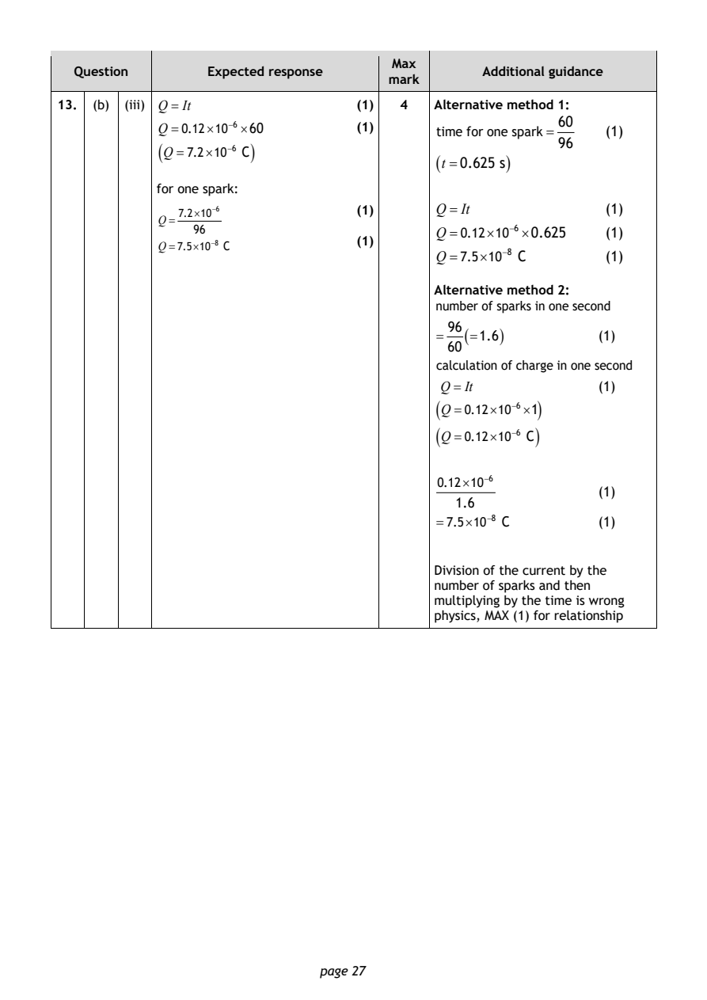
Selectable page text
Max
Question Expected response Additional guidance
mark
13. (b) (iii) Q = It (1) 4 Alternative method 1:
60
Q =0.12×10⁻⁶×60 (1) time for one spark = (1)
96
(
Q =7.2×10⁻⁶ C
)
( t =0.625 s)
for one spark:
7.2×10⁻⁶ (1) Q= It (1)
Q=
96 Q=0.12×10⁻⁶×0.625 (1)
(1)
Q=7.5×10⁻⁸ C
Q=7.5×10⁻⁸ C (1)
Alternative method 2:
number of sparks in one second
96
= (=1.6) (1)
60
calculation of charge in one second
Q= It (1)
( )
Q=0.12×10⁻⁶×1
( )
Q=0.12×10⁻⁶ C
0.12×10⁻⁶
(1)
1.6
=7.5×10⁻⁸ C (1)
Division of the current by the
number of sparks and then
multiplying by the time is wrong
physics, MAX (1) for relationship
page 27PDF page 28
Section 2, Question 14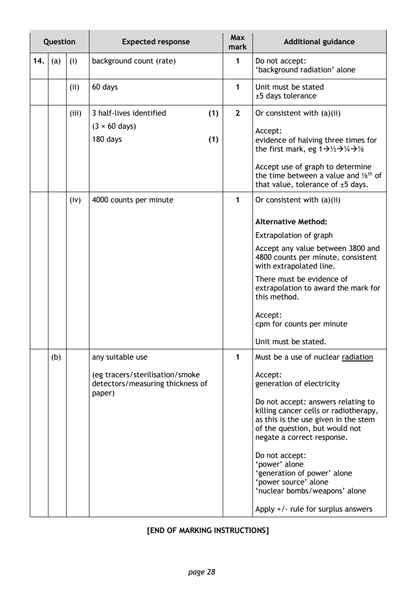
Selectable page text
Max
Question Expected response Additional guidance
mark
14. (a) (i) background count (rate) 1 Do not accept:
‘background radiation’ alone
(ii) 60 days 1 Unit must be stated
±5 days tolerance
(iii) 3 half-lives identified (1) 2 Or consistent with (a)(ii)
(3 × 60 days)
Accept:
180 days (1) evidence of halving three times for
the first mark, eg 1½¼⅛
Accept use of graph to determine
the time between a value and ⅛^{t}^{h} of
that value, tolerance of ±5 days.
(iv) 4000 counts per minute 1 Or consistent with (a)(ii)
Alternative Method:
Extrapolation of graph
Accept any value between 3800 and
4800 counts per minute, consistent
with extrapolated line.
There must be evidence of
extrapolation to award the mark for
this method.
Accept:
cpm for counts per minute
Unit must be stated.
(b) any suitable use 1 Must be a use of nuclear radiation
(eg tracers/sterilisation/smoke Accept:
detectors/measuring thickness of generation of electricity
paper)
Do not accept: answers relating to
killing cancer cells or radiotherapy,
as this is the use given in the stem
of the question, but would not
negate a correct response.
Do not accept:
‘power’ alone
‘generation of power’ alone
‘power source’ alone
‘nuclear bombs/weapons’ alone
Apply +/- rule for surplus answers
[END OF MARKING INSTRUCTIONS]
page 28